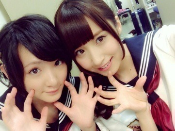

| 2013/11 11 Mon | MJ収録でしたっヽ(・ ∀・)ﾉ |
今日はMJ収録とあともう一つ収録がありましたっ！
MJ来てくださった皆さんありがとうございましたヽ(・∀・)ﾉ

次は乃木坂46ですと紹介されたとき皆さんの歓声が聞こえてきました。
前よりも大きくなってた。
凄く嬉しかった。
乃木坂ちゃんと知られてる。
実感しました！
ありがとうございます！
バレッタを是非聴いて見てください！
よろしくお願いします


蝶々のバレッタ
セーラ服っていいよね。
シンプルなのに可愛さ、かっこよさ、色んな色が出せるんだもん。
セーラ服最強。
尚月地さんという漫画家さんの作品で廃墟少女というのがあるのですが、それに出てくる女の子が凄く可愛くて、そして白のセーラ服が可愛くて憧れます

絵も綺麗で画集も集めてます！

みさ先輩〜ヽ(・∀・)ﾉ
みさ先輩のおしりお気に入りっ！
あとね
生駒ちゃんまたまたイヤホンを洗濯してしまったのですよ！
ズボンのぽっけに入れっぱなしで！
しかもそのイヤホンちょっと壊れてて、新しく買うのお金もったいなくて接着剤でとめたばかりだったのに

したらっ！
なんとっ！
いっ
いっいっいっ
生きてたヽ(・∀・)ﾉ
奇跡的に音めちゃくちゃキレッキレに聴こえましたヽ(・∀・)ﾉ
いや〜
なんか勝った気分♡
そんな最近です〜
皆さんに質問！
紅茶はストレート派？
ミルクティー派？
生駒ちゃん意外とストレート派！
しかも甘さないやつ！
大人でしょ？？しょ？しょっ？
ミルクティーはタピオカのとき！
待ってます！
へばなっ！☆
コメント(601)
2013/11/11 23:06